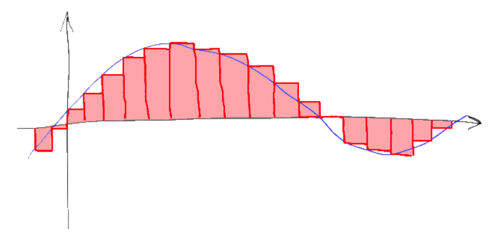
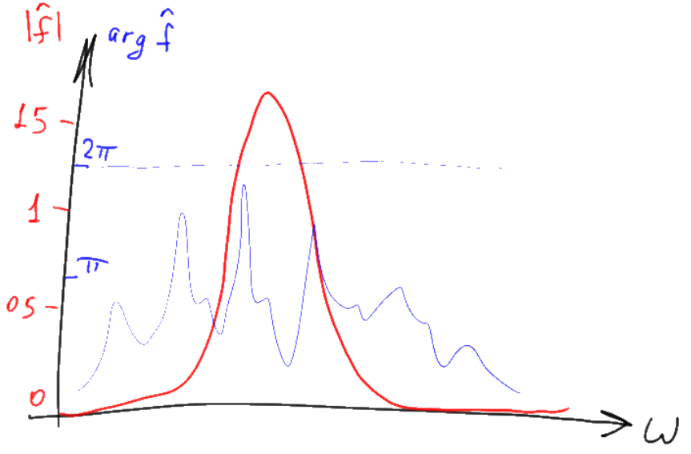
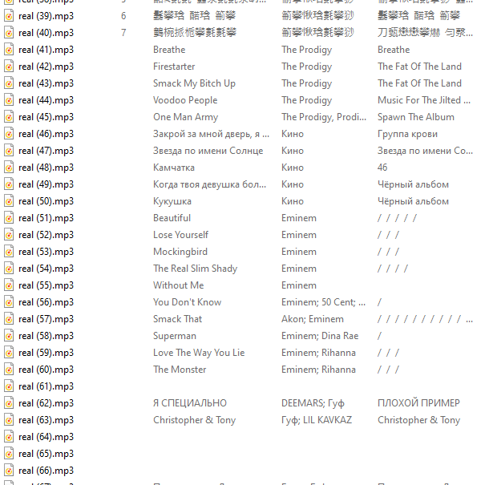
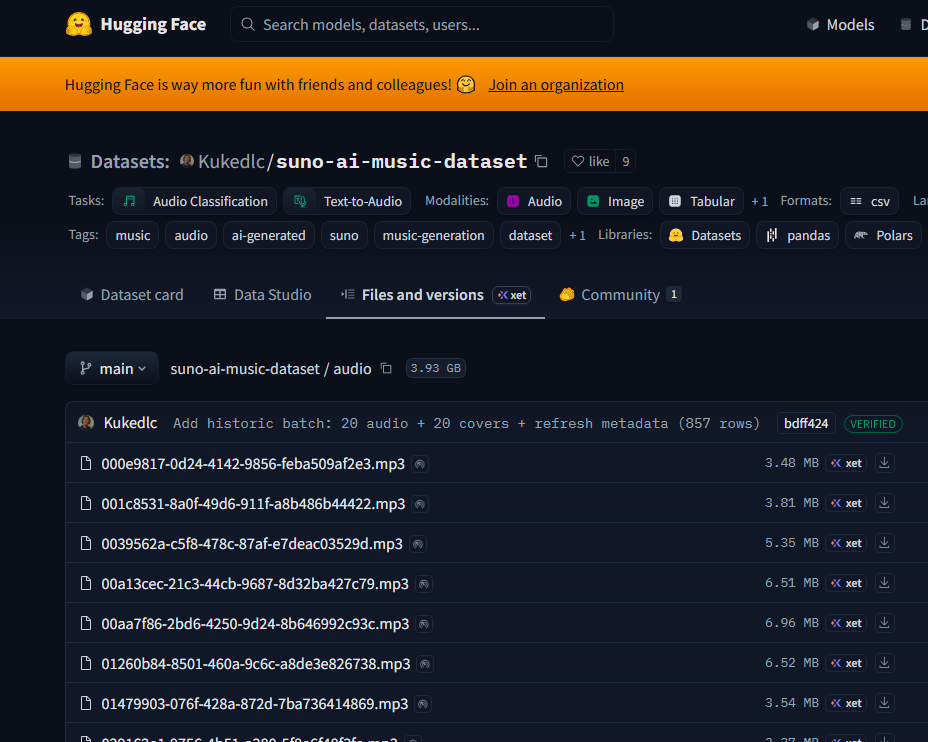
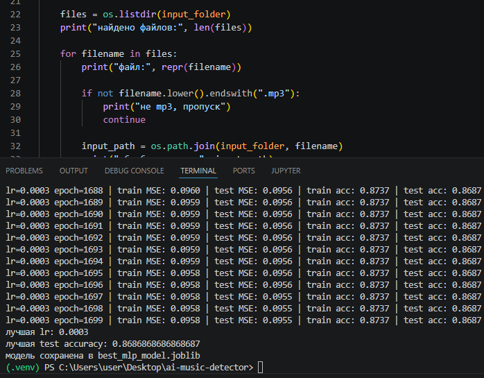
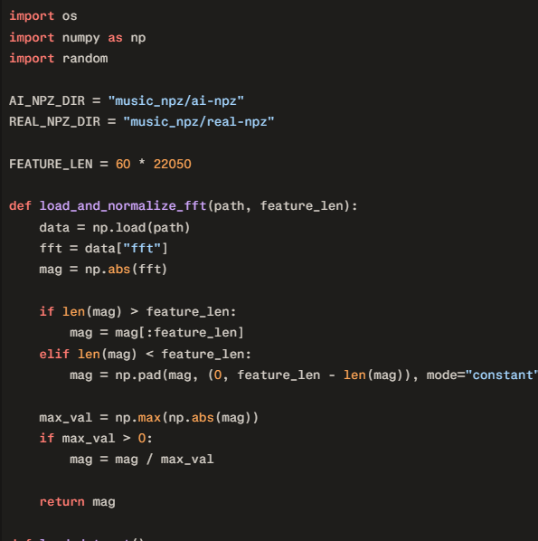
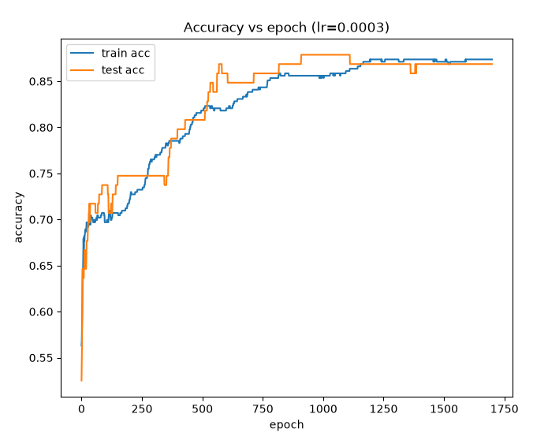
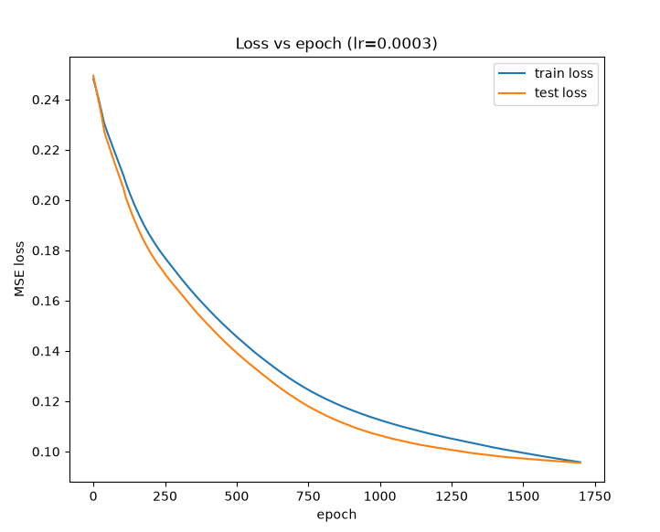

Отличает, трек от ИИ
или живого музыканта
Загрузите MP3 — модель проанализирует звук и покажет, относится ли песня к AI‑музыке или к реальным записям.
Перетащите MP3 сюда или выберите файл
Поддерживаются файлы .mp3
Как нейросеть принимает решение
После конвертации музыка превращается в большой набор чисел —
каждое число описывает амплитуды/частоты во времени.
Каждое число умножается переменную, выработанную во время обучения модели.
Результаты суммируются по формуле:
x — входные данные (амплитуды спектра и коэффициенты MFCC),
w — веса, которые модель подобрала во время обучения,
b — смещение, σ — функция активации,
y — итоговая вероятность принадлежности песни к одному из классов.
Как звук превращается в числа
Модель берёт звук
и раскладывает его на частоты: показывает,
какие есть и насколько сильна каждая.
В итоге вместо непрерывной волны, мы получаем таблицу чисел.
Для каждой песни получается 84 числа. Модель не видит жанр или автора,
она работает только с этим цифровым описанием и по нему сверяется
с собственными факторами оценивания, которые сформировала во время обучения.


Сбор датасета
Я набирал треки по сайтам с mp3 и разным жанрам - от Майкла Джексона и Сектора Газа до саундтреков к Смешарикам и нейромузыки. Каждый трек размечал как REAL или AI. Всего 500 треков.


Первые попытки
Сначала использовал только преобразование Фурье и один нейрон
(один вход данных - один выход 0/1),
но быстро стало понятно,
что такой подход почти ничего не различает.


Усложнение модели
Я добавил мел‑признаки, MFCC и перешёл к многослойному перцептрону.
Теперь модель анализирует десятки
чисел одновременно и учится
находить более сложные закономерности.

